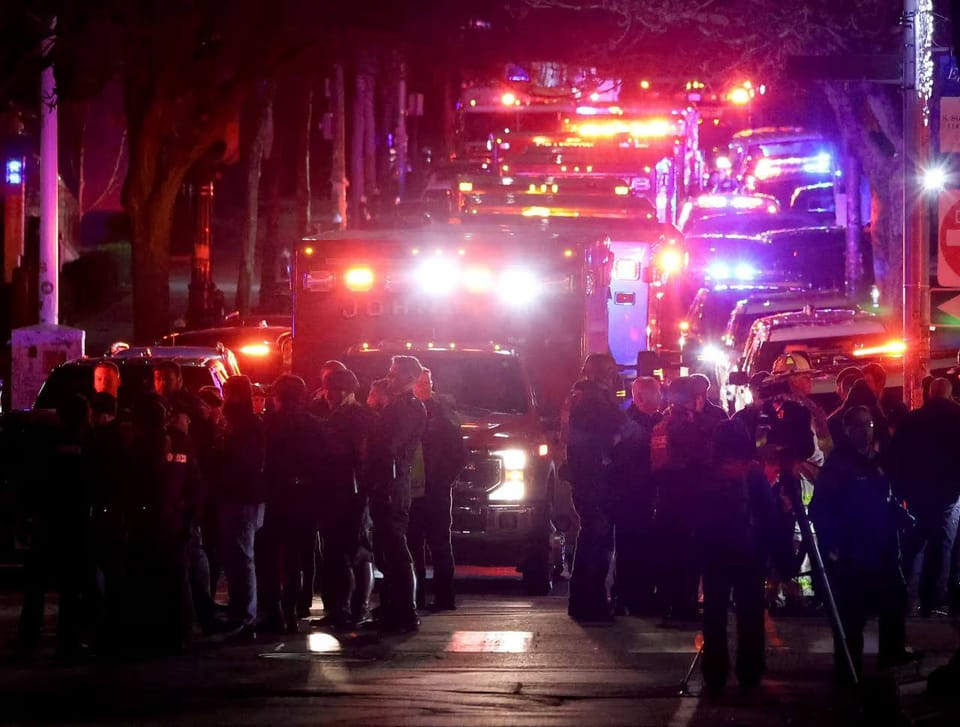

世界苦茶12月14日新闻 | 20条 | 美国澳大利亚爆发枪击案

美国澳大利亚爆发枪击案 | Meta撤资, 台湾事实核查中心陷入危机 | 南京大屠杀公祭警告日本 | 中菲仙宾礁冲突升级 | 梅西印度行引发球迷愤怒 | 白俄罗斯释放政治犯换取美国削减制裁
苦茶数据
美元兑人民币：7.05（昨日7.05，前日7.05）
美元兑日元：155.75（昨日155.73，前日155.19）
上证指数：休市（昨日3889，前日3871）
标普500指数：休市（昨日6827，前日6901）
比特币：89399（昨日90429，前日92281）
布伦特原油：61.12（昨日61.67，前日60.99）
中国新闻
• 中国举行南京大屠杀公祭不点名警告日本。
中国举行南京大屠杀死难者国家公祭仪式，在中日关系高度紧张的敏感时刻，中国高层在公祭仪式上不点名警告日本，“任何企图复活军国主义、挑战二战后国际秩序”的行径都注定失败。星期六是中国第12个南京大屠杀死难者国家公祭日。据新华社报道，中共中央、中国国务院当天在“侵华日军南京大屠杀遇难同胞纪念馆”举行国家公祭仪式。中共政治局委员、中央组织部部长石泰峰出席仪式并讲话。据官媒中央电视台画面，石泰峰在讲话中回顾中共引领下的抗日战争历史，强调中国要弘扬正确二战史观，坚决维护二战胜利成果和战后国际秩序。
• 中菲仙宾礁再起冲突 北京驱离菲船被指致渔民受伤。
中国海警船与菲律宾渔船在南中国海再次发生冲突，多艘菲律宾渔船星期五前往仙宾礁海域，被中国海警驱离。马尼拉指控中方在行动中使用水炮，导致三名渔民受伤、两艘渔船严重受损。中国海警局星期五通报称，菲律宾多批船只当天打着捕鱼的旗号，不顾中方一再劝阻和警告，执意赴南沙群岛仙宾礁海域滋事挑衅；中国海警依法依规对菲船只采取“喊话警告、外逼驱离等必要管控措施”。中国海警局新闻发言人刘德军强调，中国对包括仙宾礁在内的南沙群岛及其附近海域拥有无可争辩的主权；中国海警将依法在中国管辖海域持续开展维权执法活动，“坚决维护国家领土主权和海洋权益”。菲律宾海警发言人塔里埃拉星期六指出。
• 北京派非部长出席中日韩卫生部长会议。
日本媒体报道，北京将派工作级别官员而非部长，出席在韩国首尔举行的中日韩卫生部长会议。据日本共同社报道，日本卫生、劳动和福利部星期五宣布，部长上野贤一郎星期六至星期天访问韩国，并出席此次会议。日本政府人士透露，中国计划以工作级别官员代替部长参会，原因尚不明确。中日韩卫生部长会议自2007年启动，几乎每年召开并发表联合声明。日本卫生、劳动和福利部指出，中日韩按惯例会派部长出席，但过去也曾出现因行程不便而改由其他官员代为参会的情况。上野贤一郎在记者会上说，会议将讨论三国共同面对的老龄化挑战，以及医疗卫生合作，并希望“确认持续合作关系”。
印太新闻
• 缅甸军方称，遭空袭击中的医院被武装反对派用作基地。
缅甸军方周六承认若开邦一所医院遭到空袭。当地一名救援人员及媒体报道说，袭击造成包括病人，医护人员和儿童在内的30多人死亡。军方在国营《缅甸环球新光报》刊登的声明中表示，武装组织将该医院作为基地。声明称，这些组织包括若开军，以及民众防卫军和缅族人民解放军等在2021年军方夺权后组建的亲民主民兵。声明称，军方对医院建筑进行了必要的安保措施，并于周三对医院建筑发起反恐行动。声明补充说，死亡或受伤者是反对派武装成员及其支持者，而非平民。自2021年军方夺权以来，缅甸局势动荡，引发广泛民众反对。许多反对者若开邦一名救援部门高级官员周四对美联社表示。
• Meta撤资 台湾事实查核中心陷营运危机。
日经亚洲今天披露，在台湾致力打击假讯息的「台湾事实查核中心」恐陷生存危机，原因是Facebook母公司Meta恐在未来几周内撤回巨额的经费支持。Meta与包括台湾事实查核中心在内的全球多个事实查核机构合作，提供资金阻止虚假资讯的传播。Meta捐款约占台湾事实查核中心2025年预算的一半，而Google捐款则超过30%。当事实查核中心发现假新闻，会通报Meta与其他类似合作伙伴。这些公司则付费给查核中心作为回报。
• 愤怒的球迷在印度向梅西活动投掷椅子和瓶子。
出席莱昂内尔·梅西在印度巡演的愤怒球迷在加尔各答盐湖体育场他的亮相后撕毁座椅并向场内投掷物品。成千上万的崇拜者支付高达1.2万印度卢比的票价只为一睹球星风采，但当他出场在场边走动时被大群官员和名人遮挡，令他们失望。当这位阿根廷国脚兼国际迈阿密球员在约20分钟后被安保人员迅速带离时，部分观众态度变得敌对。西孟加拉邦首席部长玛玛塔·班纳吉表示，她对发生的事件“深感不安和震惊”。她在宣布调查时向梅西和“体育爱好者”就体育场内的事件道歉。“委员会将对该事件进行详细调查，查明责任，并建议防止此类事件再次发生的措施，”首席部长在X平台上说。
• 随着战斗持续，柬埔寨关闭与泰国的边境口岸。
柬埔寨已关闭与泰国的边境口岸。尽管美国总统唐纳德·特朗普早些时候表示双方已同意停火，但周六两军之间的交火仍在继续。柬埔寨内政部称，口岸将关闭，直至另行通知。此前，泰国总理阿努廷·查恩维拉库表示，他告诉特朗普，只有在柬埔寨撤出所有部队并清除地雷后才可能实现停火。泰方官员称周六有四名士兵被击毙，双方均报告继续发生轰炸和炮击交火。柬埔寨未更新其军事伤亡数字。
• 尽管特朗普声称停火，泰柬边境的战斗仍在激烈进行。
尽管特朗普宣称达成停火协议，泰柬边境战斗仍在激烈进行 泰国素林讯——周六清晨，泰国与柬埔寨边境仍爆发激烈交火，尽管美国总统唐纳德·特朗普以调停者身份宣称已促成两国就新停火达成一致。泰方官员表示他们并未同意停火。柬埔寨尚未对特朗普的说法作出直接回应，但其国防部称泰方战机于周六清晨进行了空袭。泰国外长色哈沙·彭加科周六表示，特朗普的一些言论“并未准确反映事态”。他指出，特朗普将炸伤泰国士兵的地雷爆炸描述为“路边事故”不准确，也未能反映泰国将其视为“蓄意侵略行为”的立场。
科技新闻
• 民主党参议员反对特朗普批准英伟达向中国销售H200芯片。
七名美国民主党参议员正在反对美国总统特朗普本周允许英伟达向中国出售其第二先进的人工智能芯片的决定。在周五发给商务部长霍华德·卢特尼克的一封信中，民主党参议员批评了政府授权英伟达在中国销售H200芯片的做法。这些参议员写道：“总统放弃关键国家安全管制的危险决定，严重背离了两党长期以来为确保美国技术不会助推中国军事和技术能力而做出的努力。”这些民主党参议员在信中指出，就在特朗普改变立场并授权销售 H200 的几个小时前，美国司法部刚刚宣布对多名走私者提起诉讼，他们被控违反出口法，将数千枚H200芯片偷运到中国。
经济新闻
• 中国拟出台更严格监管措施 遏制汽车价格战。
中国市场监管部门针对汽车价格起草意见稿，拟通过规范定价和销售行为，防止车企以过低价格销售汽车，从而遏制激烈竞争带来的通缩压力。中国国家市场监督管理总局星期五发布《汽车行业价格行为合规指南》，对整车及零部件的生产、定价策略和销售行为提出价格合规要求，并向社会公开征求意见，反馈截止日期为12月22日。市场监管总局指出，汽车生产销售领域近年来存在价格标示不规范、价格欺诈、价格串通以及非理性竞争等问题，严重扰乱市场秩序，侵害消费者和经营者的合法权益。根据意见稿，汽车销售须明码标价，不得以虚假的“市场价”“清仓价”等名义进行宣传。
• 中国车企吉利启用全球最大汽车安全测试中心。
中国汽车制造商吉利汽车星期五启用全球最大的汽车安全测试中心，对外提供安全测试服务，以应对国内外监管机构和消费者对汽车质量不断上升的要求。综合路透社、彭博社和《证券时报》报道，这一中心位于浙江宁波，占地逾8万平方米，总投资20亿元人民币。吉利介绍，该中心可开展27类安全测试，涵盖高速碰撞试验，以及电池和动力总成等关键系统的安全评估。吉利副总裁李传海指出，电池安全以及包括高级驾驶辅助系统在内的智能功能可靠性，仍是消费者最关注的问题，新中心将有助于回应这些关切。他还说，随着多起备受关注的事故发生，以及国家层面监管持续趋严，消费者愈发重视车辆安全。
• 中国外交部长王毅敦促阿联酋帮助促成与海湾国家集团的自由贸易协定。
中国外长王毅正在进行为期三国的中东访问，并于周五在阿布扎比会见了阿联酋外长谢赫·阿卜杜拉·本·扎耶德·阿勒纳哈扬。中国外交部在其网站声明中称，王毅在会见中表示，中国支持阿联酋“维护国家安全和发展”以及其“在国际和地区事务中日益增强的作用”。王毅还呼吁双方在投资、石油天然气和基础设施等传统领域深化合作，同时拓展包括可再生能源和科技创新在内的新领域。他并希望阿联酋能帮助推动中-海合会自贸协定谈判早日达成。阿卜杜拉·本·扎耶德同时为阿联酋副总理，他回应称阿联酋“愿在此事上发挥积极作用”。
• 中国在尼日利亚为拥有15个成员国的经济集团建设的总部，加强了与非洲的联系。
中国承建的西共体总部是中非关系最新的“混凝土象征” 北京通过赠送受人瞩目的总统宫殿和被称为“独一无二”的议会大楼来投射影响力的策略 一个典型例子是位于阿布贾、耗资3200万美元的西非国家经济共同体总部。该项目由中国出资，计划于一月底交付使用，这一为15国集团打造的集中办公综合体旨在提高员工效率并降低运营成本。12月4日，中国驻尼日利亚大使于敦海视察了工地并会见了西共体委员会主席奥马尔·图雷博士。于敦海称该建筑是“双边合作的里程碑项目”，是南南合作的有力范例。
俄乌战争
• 美国表示将解除对白俄罗斯的部分贸易制裁。
白俄罗斯在周六释放了诺贝尔和平奖得主阿列斯·比亚沃茨基、关键反对派人物玛丽亚·科列斯尼科娃以及数十名其他政治犯，结束了与华盛顿为期两天的会谈，旨在改善关系并解除对白俄罗斯一项重要农产品出口的沉重美国制裁。白俄罗斯总统亚历山大·卢卡申科已赦免123名囚犯，白俄罗斯国家通讯社Belta报道。作为交换，美国表示将解除对该东欧国家钾肥行业的制裁。明斯克是俄罗斯的亲密盟友，多年来一直面临西方的孤立和制裁。
• 美国特使威特科夫将在德国与泽连斯基会面，进行最新一轮和平谈判。
多家媒体报道，美国特使史蒂夫·维特科夫计划本周末在德国与乌克兰总统弗拉基米尔·泽连斯基会面，讨论结束与俄罗斯战争的方案。报道称，英国首相基尔·斯塔默、法国总统埃马纽埃尔·马克龙和德国总理弗里德里希·梅尔茨也预计将参与有关乌克兰的会谈。《华尔街日报》最先报道了在柏林计划举行的会议。德国会谈的具体时间和范围尚未披露。英国政府表示，欧洲领导人计划在周一于柏林会面，而非周末。POLITICO早前报道，英国国家安全顾问乔纳森·鲍威尔预计本周末将与德国和法国同行、美国的维特科夫以及乌克兰代表举行会谈。
• 在过去一天俄罗斯对乌克兰的袭击中，至少造成3人死亡、35人受伤。
当地当局12月13日报道，过去一天俄罗斯对乌克兰的袭击已造成至少3人死亡、35人受伤。空军称，俄罗斯发射了465架无人机、16枚“口径”巡航导弹和5枚伊斯坎德尔-K巡航导弹、5枚伊斯坎德尔-M/KN-23弹道导弹及4枚“匕首”高超音速导弹。乌克兰防空拦截了417架无人机，以及9枚“口径”和4枚伊斯坎德尔-K巡航导弹。仍有8枚导弹和33架无人机突破防御，击中18处目标。被击落的无人机和导弹残骸记录在3处地点。同时，还有6枚导弹未击中目标，其落点仍在核查中。
世界新闻
**• 美国布朗大学12月13日发生枪击事件，造成至少2人死亡、8人重伤。枪手为一名穿穿黑衣的男性。目前警方仍在搜捕枪手。 **
**• 澳大利亚悉尼邦迪滩12月14日发生枪击事件，造成至少10人死亡、12人受伤。 **
死者和伤者中分别包括一名枪手。受伤的枪手已被拘留。警方正努力拆除简易爆炸装置，建议公众避开邦迪滩。14日为犹太教光明节的第一天，海滩上正在举行节庆活动。目前尚不清楚枪手动机。以色列总统指责枪击针对犹太社区。
• 陪审团裁定强生须向两名使用滑石粉的癌症患者支付4000万美元。
洛杉矶陪审团周五判决，强生公司需向两名声称其爽身粉导致卵巢癌的女性支付4000万美元赔偿。该大型医疗保健公司表示将对陪审团的责任裁决和赔偿金额提出上诉。此裁决是围绕强生婴儿爽身粉和洁厕爽身粉中滑石粉与卵巢癌及间皮瘤关联指控的长期法律纷争中的最新进展。强生于2023年停止在全球销售含滑石粉的爽身粉。去年10月，加利福尼亚另一陪审团裁定强生需向一名死于间皮瘤的女性家属支付9.66亿美元，称该女性使用的婴儿爽身粉被致癌物石棉污染，导致其罹患癌症。在本案中，陪审团分别裁定向莫妮卡·肯特支付1800万美元。
• 在其他欧盟领导人采取更强硬立场之际，西班牙领导人在为移民辩护时显得孤立无援。
随着特朗普抨击欧洲移民问题，大多数领导人加强立场，西班牙是个例外 马德里——在极右翼民粹主义抬头以及特朗普政府警告如果不收紧边界欧洲可能面临“文明消失”的背景下，大多数欧洲领导人在移民问题上表态更强硬，而西班牙首相佩德罗·桑切斯则与众不同。近年来，伊比利亚国家接纳了来自拉丁美洲和非洲的数百万人，左翼的桑切斯经常赞扬合法来西班牙移民给欧元区第四大经济体带来的财政和社会利益。桑切斯常说，西班牙的选择在于“成为一个开放且繁荣的国家，还是一个封闭且贫穷的国家”。他的话与其他西方领导人形成鲜明对比，迄今为止，这一押注似乎正见成效。